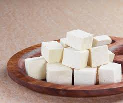

Paneer Receipes
Paneer is fresh cottage cheese which is firm and can be cut into blocks or cubes. Paneer is made by curdling milk with a food acid. The curdled and coagulated milk is collected in a muslin to drain the extra whey. Once the whey is drained what you get is a block of fresh cheese which you can cut into cubes. Being a versatile ingredient it can be added to any recipe for added protein.
1. Paneer Butter Masala

Ingredients
- Paneer 250 gm.
- 2 tsp. oil
- 2 green cardamom
- 1 cup cube onion
- 1 1/2 cup finely chopped tomatoes.
- 1 tsp. red chilly powder
- 1 tsp. garam masala
- 1 tsp. coriander powder
- 12-14 cashews
- 3/4 tsp. sugar
- Garlic 4-5, Ginger 1/2 inch, coriander
- Coriander
Method
Pour 2 tsp. of oil to a hot pan. Add 2 green cardomom and a cup cuber onions. Saute them on a medium flame till they turn transparent or lightly pink in color.
Add 1 1/2 cup finely chopped tomatoes. 3/4 tsp salt. Again saute for 2 to 3 minutes. Then cover the pan and cook till mushy.
Then add red chilly powder, garam masala, coriander powder, cashews, sugar. Saute this onion tomato masala on a low heat for 2-3 minutes. Turn off the stove.
Cool this completely and blend it. Heat a pan on low flame with 1 1/2 tsp. butter. When the butter melts add 1 1/2 tsp ginger garlic paste. Pour onion tomato puree, add 1/4 tsp. red chilly powder, 1/2 cup water. Cover it and cook for 2 min. Then add paneer cube, kasuri methi and one pinch salt. Then add 2-3 tsp. cream and chopped coriander.
Serve paneer butter masala with Jeera rice, Chapati, Paratha, Roti or Naan.
2. Palak Paneer
Ingredients
- Palak(Spinach) 250gm.
- 2 tsp. oil
- Paneer 200 gm.
- Ginger, garlic paste 1 tsp.
- 1 onion finely chopped
- 1 tomato finely chopped
- Cummin seed 1 tsp.
- Turmeric 1/2 tsp.
- Red chilly powder 1 tsp.
- Garam masala 1/2 tsp.
- Kasuri methi 1/4 tsp.
- Salt 1 1/2 tsp.
- Cream 2 tsp.
- Sugar 1/4 tsp.
Method
To a pot of boiling water, add little salt and then spinach leaves to it. Blanch the spinach leaves for 2 to 3 minutes until wilted.
Take them out and put them in ice cold water. This helps the leaves in retaining their green color.
To a blender, add the blanched spinach along with tomato, 3 cloves of garlic, ginger and green chili. Puree to a smooth paste and set aside.
Heat a pan on medium heat. Once hot, add the oil and then add the remaining 2 cloves of chopped garlic. Sauté for few minutes until it starts changing color. Then add the chopped onions.
Cook the onion for 2 to 3 minutes until soft and translucent.
Add in the prepared spinach puree and mix. Also add around 1/2 cup water at the point.
Cover the pan and let it cook for 10 minutes on medium heat. The spinach will bubble a lot. Stir at regular intervals to avoid sticking at the bottom.
Once the spinach is cooked, add the garam masala, turmeric powder, red chilli powder and salt. Mix and cook for 1 minute. You may also add ½ teaspoon of sugar at this point if you like.
Then add the heavy cream and mix.
Stir in the paneer and mix. Let the curry simmer for 3 to 4 minutes.
Switch off the flame, add lemon juice and kasuri methi and mix.
Serve palak paneer hot with naan or roti or rice.